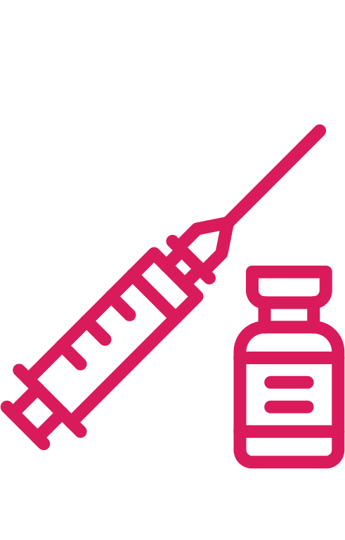
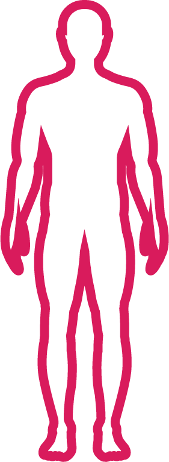

Mengantisipasi Corona di Luar Negeri
Negara Mana dengan Kasus Corona Terbanyak?
Tanggal update: 15 Maret 2020, pukul 18.30 WIB
Perkembangan COVID-19 di Indonesia
Kasus Positif
117
Meninggal Dunia
5
Sembuh
8
Tanggal update: 15 Maret 2020, pukul 18.30 WIB
Perlukah Membatasi Perjalanan ke Luar Negeri?
WHO menyatakan tidak akan mengeluarkan imbauan bepergian karena merupakan kewenangan masing-masing negara. Anda yang bepergian ke luar negeri diimbau memantau status negara tujuan di aplikasi Safe Travel.
Bagi lansia, penderita penyakit kronis, atau yang sedang tidak fit, hindari bepergian ke daerah terdampak.
Apa yang Harus Diwaspadai Jika ke Luar Negeri?
Unduh aplikasi Safe Travel dari Kementerian Luar Negeri Indonesia.
Simpan nomor KBRI di negara tujuan.
Baca informasi resmi kondisi terkini di negara tujuan.

Vaksin jika diperlukan sebelum berangkat.
Jaga kondisi tubuh dan kebersihan selama di perjalanan.
